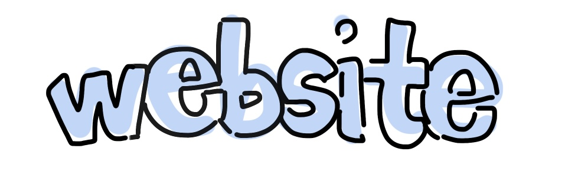

hi hi hi hi hi hi hi hi hi hi hi hi full screen (click new tab)
<- Here is a really really really simple drawing thing I made to make it easier to draw on
computer
Run it, full screen it, then to draw press any key
Also I have my last year's java game project which I can show at the interview